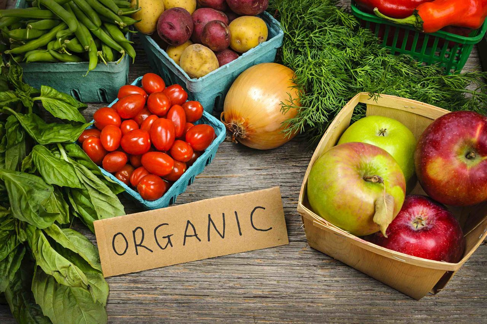
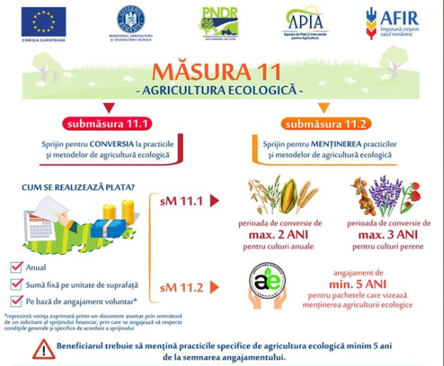
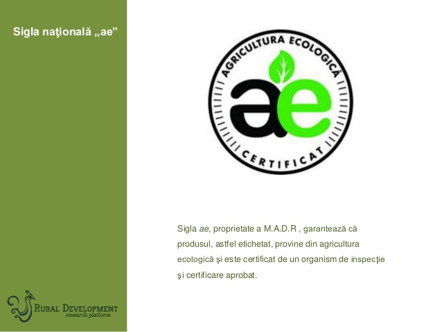
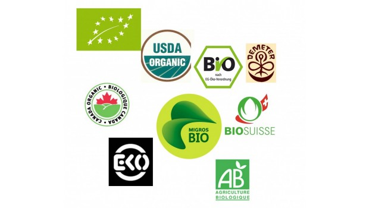
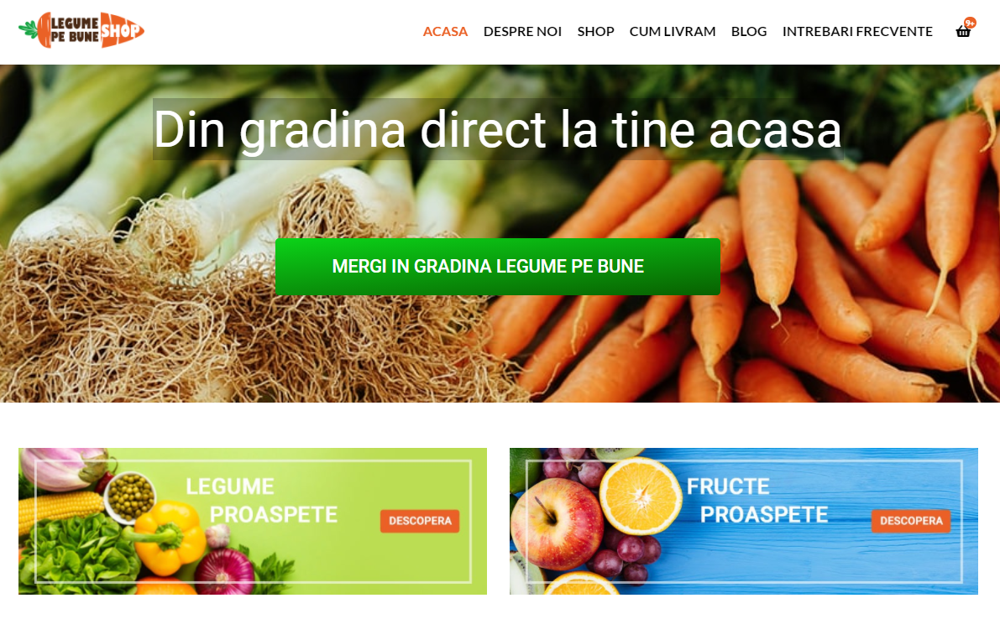

AGRICULTURA ECOLOGICĂ PE LARG: AVANTAJE, PAȘI PENTRU CONVERSIE ȘI CUM OBȚII CERTIFICARE
Dragos comments agricultura ecologica, bio, ecologic, legume, organic.
Ce este agricultura ecologică?
Termenul de agricultură ecologică se referă la promovarea unui sistem de agricultură care să respecte mediul înconjurător și să înlesnească cerințele social-economice moderne.

Care este rolul agriculturii ecologice?
Agricultura ecologică, numită și agricultură organică, are scopul de a produce hrană curată cu ajutorul unor practici care să se alinieze misiunii de a conserva și dezvolta mediul înconjurător. Cu alte cuvinte, produsele agroalimentare rezultate trebuie sa fie proaspete, fară să se intervină asupra factorilor naturali de dezvoltare. Prin agricultura ecologică se doreste dezvoltarea durabila a agriculturii, cresterea activităților economice dar și sporirea interesului față de dezvoltarea spatiului rural prin valorificarea resurselor naturale valabile.
Care sunt practicile specifice agriculturii ecologice?
Datorită misiunii de a crea un echilibru între industrie si biodiversitatea naturii, producția alimentelor se desfasoară sub o serie de reguli stricte.
In etapa de producție, fermele nu folosesc:
-organisme modificate genetic sau derivate ale acestora
-fertilizante și pesticide sintetice
-stimulatori de crestere
-hormoni
-antibiotice.
In etapa de procesare, nu se folosesc:
-aditivi alimentari
-substanțe complementare ori chimice de sinteză.
Prin urmare, având la bazâ obiectivele Consiliului European, trecerea de la agricultura convențională la cea ecologică va avea un impact pozitiv atât asupra mediului cât și a producătorului și consumatorului. Așadar, prin eliminarea substanțelor chimice, mai ales a pesticidelor, produsele agricole vor fi supuse unui risc scăzut de contaminare și vor fi mai sigure pentru consumul uman și animal.
De asemenea, apa potabilă nu va mai fi expusă riscului de contaminare cu nitrați și bacterii iar biodiversitatea va deveni mai variată și va trece peste pericolul la care este supusă astăzi. Și fermierii vor avea de câstigat în urma conversiei și a eliminării pesticidelor chimice care sunt deseori corelate cu aparitia cancerului, a alergiilor sau a astmului.
Ce reprezintă conversia la agricultura ecologică?
Conversia la agricultura ecologică reprezintă o soluție la problemele de mediu la nivel global, precum încalzirea globală, ploile acide, reducerea biodiversității și desertificarea. Agricultura convențională este al treilea sector emitător de gaze cu efect de seră din Uniunea Europeana.Protoxidul de azot și metanul rezultate din practicile conventionale din agricultură vor fi scăzute semnificativ prin adoptarea normelor din legislația agriculturii ecologice.
De asemenea, agricultura ecologică folosește mai putină energie atât pe hectar cât și pe unitatea de produs în comparație cu agricultura convențională.

Care este perioada obligatorie pentru conversie la culturi de legume, fructe, cereale si furaje?
Trecerea de la agricultura conventională la cea ecologică nu se poate face de la o zi la alta, ci pe o perioadă suficient de îndelungată pentru ca solul să devină fertil iar echilibrul ecosistemului să fie restabilit, conform legislației.
Conform agrointel.ro,pentru culturi, perioada obligatorie de conversie este de cel puțin doi ani înainte de însămanțare, iar în cazul pășunilor și al furajelor perene, cel puțin doi ani înainte de utilizarea acestor produse ca furaje obținute din agricultura ecologică. Pentru culturile perene precum plantațiile pomicole și viticole, perioada de conversi este de cel puțin trei ani înainte de prima recoltă a produselor ecologice.
Care este perioada obligatorie pentru conversie la animale?
Perioada de conversie în cazul ecvideelor și al bovinelor este de 12 luni, pentru producția de carne și cel puțin trei sferturi din durata lor de viață. În cazul rumegătoarelor mici, al suinelor și animalelor pentru producția de lapte, conversia este de 6 luni. Păsările de curte utilizate în producția de carne vor trece printr-o conversie de 10 saptămâni iar în cazul celor pentru producția de ouă, doar 6. Perioada de conversie pentru albine este de un an, dacă familia a fost cumpărată din stupine convenționale.
Ce subvenții există pentru agricultura ecologică?
Tot agrointel.ro anunta că, în 2018, subvențiile acordate producătorilor agricoli reprezintă 1,731 miliarde de lei iar plata se va face la hectar, în mod direct de către Agenția de Plăți și Intervenție pentru Agricultură. De asemenea, APIA derulează fondurile europene pentru implementarea măsurilor de sprijin finanțate din Fondul European pentru Garantare în Agricultură.
Ce trebuie să faci pentru a putea vinde sub eticheta de produse ecologice/bio/organice
Pentru a putea comercializa produse sub eticheta de aliment biologic, producatorii trebuie să respecte cu strictețe legislația impusă de Consiliul European. Normele de producție sunt cuprinse în Regulamentul (CE) nr. 889/2008și urmăresc clarificarea proceselor din agricultura ecologica pentru ca produsele rezultate să respecte obiectivele Consiliului și să castige încrederea populației în consumarea de produse bio.
De asemenea, Ministerul Agriculturii și Dezvoltării Rurale a pus la dispoziție setul de ordonanțe la nivel național pe care orice agricultor care dorește conversia la agricultura ecologică să le parcurgă și să le urmeze pentru a obține certificarea în industrie.
Doar urmărind la literă aceste norme, agricultorii vor putea să comercializeze produse ecologice cu etichetele și siglele specifice. Pe eticheta aplicată unui produs ecologic urmatoarele menţiuni sunt obligatorii: referirea la producția ecologică, siglele, numele si codul organismului de inspecție și certificare care a efectuat inspecția și a eliberat certificatul de produs ecologic. Etichetarea se completează cu sigla natională “ae”, proprietate a MADR, specifică produselor ecologice.
Care sunt avantajele certificării produselor ecologice?
Practicarea agriculturii ecologice certificate oferă garanții privind durabilitatea mediului înconjurător, bunăstarea animalelor și sănătatea consumatorilor. De asemenea, certificarea garantează calitatea produsului eco și se aplică tuturor operatorilor economici din lanțul alimentar și îi ajută pe consumatori să diferențieze usor produsele eco adevărate de cele contrafăcute.
Desigur există un avantaj financiar pentru fermieri. Costurile inițiale de investiție sunt mult mai mici prin eliminarea necesarului de cantitate de fertilizant și pesticid utilizat în agricultura convențională. Și, deși de-a lungul procesului randamentul este mai mic, prețurile de pe piața produselor bio compensează efortul depus.
Care este procesul de certificare?
Pentru a obține certificarea în domeniul agriculturii ecologice, producătorii localii de legume , fructe sau animale, trebuie să respecte permanent regulile stabilite atât în legistația națională cât și în cea comunitară. Aceștia trebuie să permită vizitele realizate de organismele de inspecție și certificare cu scopul de a controla și de a se asigura că activitățile agricole se derulează în conformitate cu prevederile legilor în vigoare privind producția ecologică.
Organismele de inspecție și certificare din România au fost aprobate de Ministerul Agriculturii și Dezvoltării Rurale în funcție de criiterile de independență, imparțialitate și competență, stabilite în Ordinul nr. 895/2016 pentru aprobarea Regulilor privind organizarea sistemului de inspecție și certificare, de aprobare a organismelor de inspecție și certificare și de supraveghere a activității organismelor de control.
Important de reținut este faptul că produsele bio certificate conțin minimum 97% ingrediente ecologice. Deasemenea considerăm că este foarte important de stiut că o mare parte din producătorii locali din românia, cresc legume fructe sau animale în sistem ecologic dar nu au canale de informare pentru a-și valorifica produsele ecologice la prețul corect.
Care sunt canalele de distribuție pentru produsele ecologice?
Din păcate, în România, piața produselor ecologice este foarte restrânsă însa există canale de distribuție accesibile precum magazinele de e-commerce sau bursele online pentru produsele ecologice. Un exempu, este si magazinul nostru de legume și fructe online: shop.legumepebune.ro , unde încercăm să sprijinim producătorii locali, în a trece la agricultura ecologica și a vinde legumele online, direct consumatorilor finali. Mai putin accesibile sunt vânzările în piețele sezoniere sau direct de la ferma producătoare, Romania fiind mai degrabă un importator decat un producator de alimente bio certificate.
